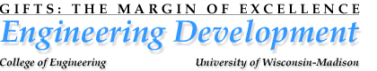
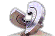

|  |  |
| Home : Why we need private support : | |
| Contributions to progress: John Nelson |
|
ME alum's gift builds student centers and scholarships |
|
|
"To those whom much is given, much is expected."
The simple proverb holds great meaning for John Nelson (MSME '76), and unlocks one reason for his generosity. For his engineering education, dedicated professors, and the skills he has employed throughout his successful career, Nelson says, "I feel extremely grateful." With students in mind, Nelson established the John S. Nelson Scholarship Fund. His donation also will help furnish the lounge in the Student Leadership Center and the video and teleconference room in the Technical Communication Center. ECB, currently under construction, will be a vibrant, state-of-the-art student meeting place, research facility, classroom, exposition space and more. "I targeted the centers building because I am an avid supporter of (Dean Emeritus) John Bollinger's vision that the building is necessary to move the college forward," he says. "The scholarship is part of a broader plan I have to provide resources in more of an ongoing manner. The contribution for the centers building is one-time; the scholarship is perpetual." President and CEO of Affiliated Engineers, Inc. (AEI), Madison, Wisconsin, Nelson is known for his innovative mechanical design of laboratory spaces in commercial and educational buildings. He has managed and directed the designs of major research facilities, utility plants, offices and data centers, hospitals and public buildings nationwide. He also serves on the Mechanical Engineering Board of Visitors, and is an instructor of laboratory mechanical design. |
Copyright © College of Engineering, University of Wisconsin-Madison
Last modified: Wednesday, 15-May-2002 17:53:00 CDT
Date created: 06-Nov-2000
Content by:
lance.cavanaugh@uwfoundation.wisc.edu,
carrie.mcginley@uwfoundation.wisc.edu,
and
deb.holt@uwfoundation.wisc.edu.
Markup by: webmaster@engr.wisc.edu
Thank you for visiting!